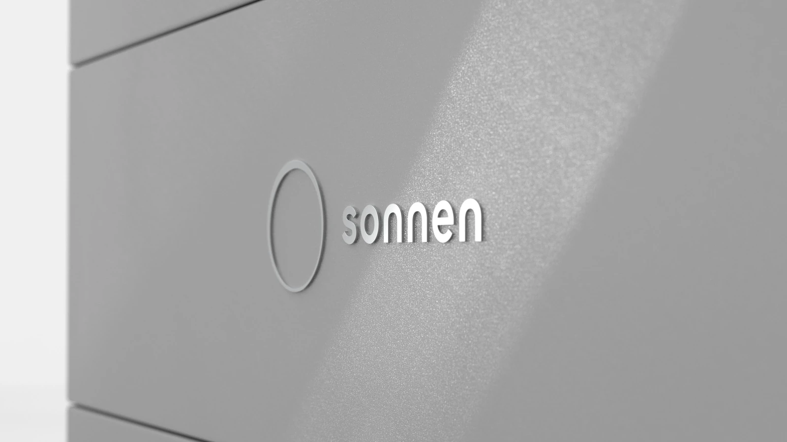
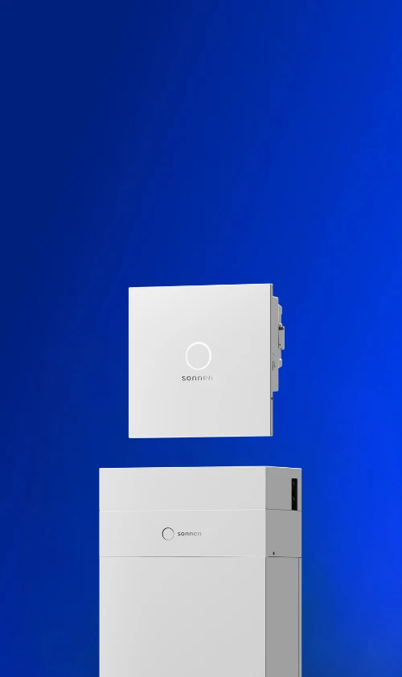

01
sonnen / 2025–present
sonnenBatterie 12
Main mechanical designer for a modular residential energy-storage platform. I owned enclosure development, detailed CAD, manufacturing definition and prototype validation.
Role
Main mechanical designer in the multidisciplinary product-development team.
Engineering work
Enclosure design, internal packaging, tolerances, DFM, drawings and supplier coordination.
Delivery
A scalable, serviceable product system prepared for indoor and outdoor installation.



Released-product imagery is used to show the final system. Role information was supplied by Ahmed Sarhan.